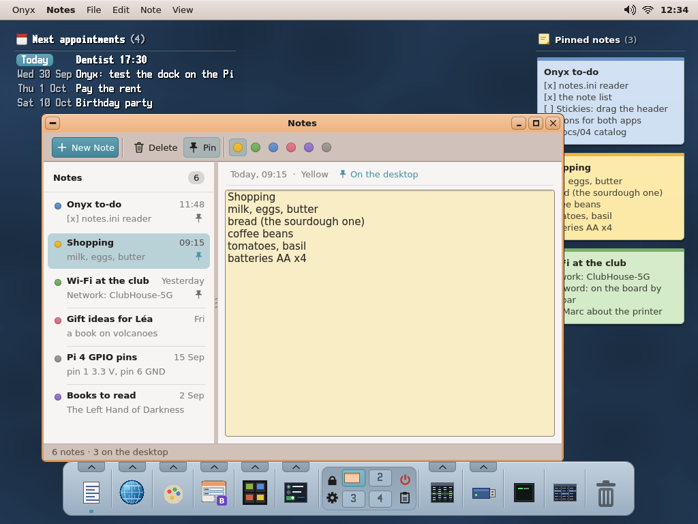
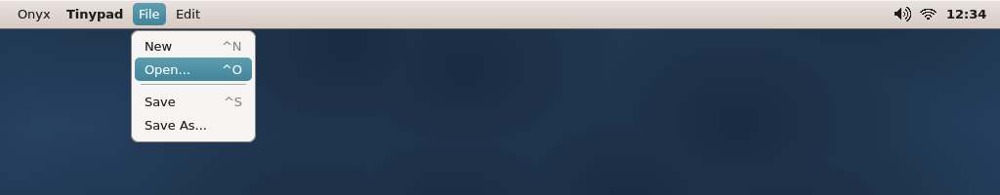
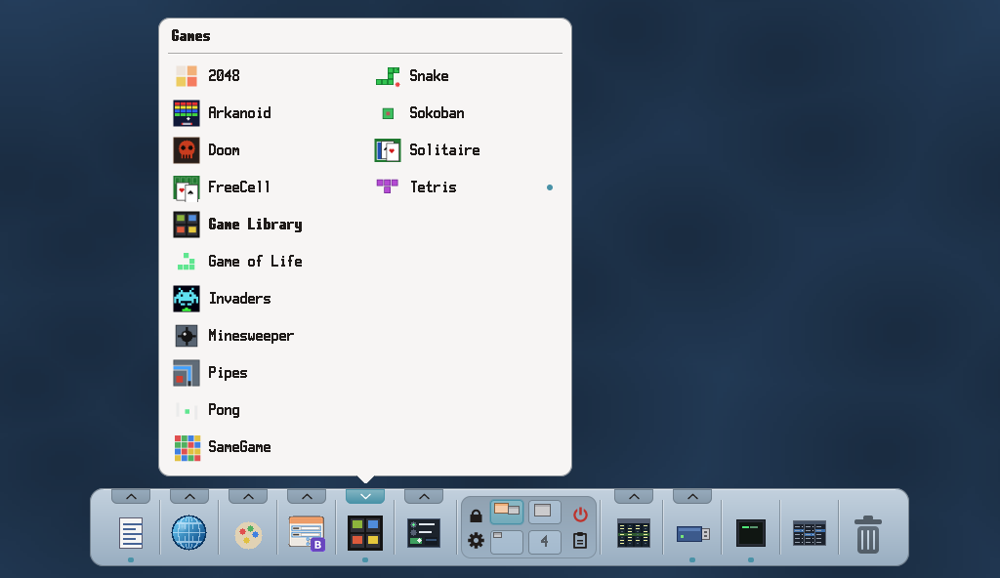
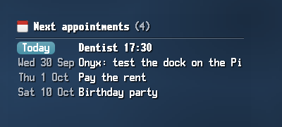
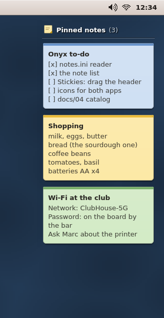
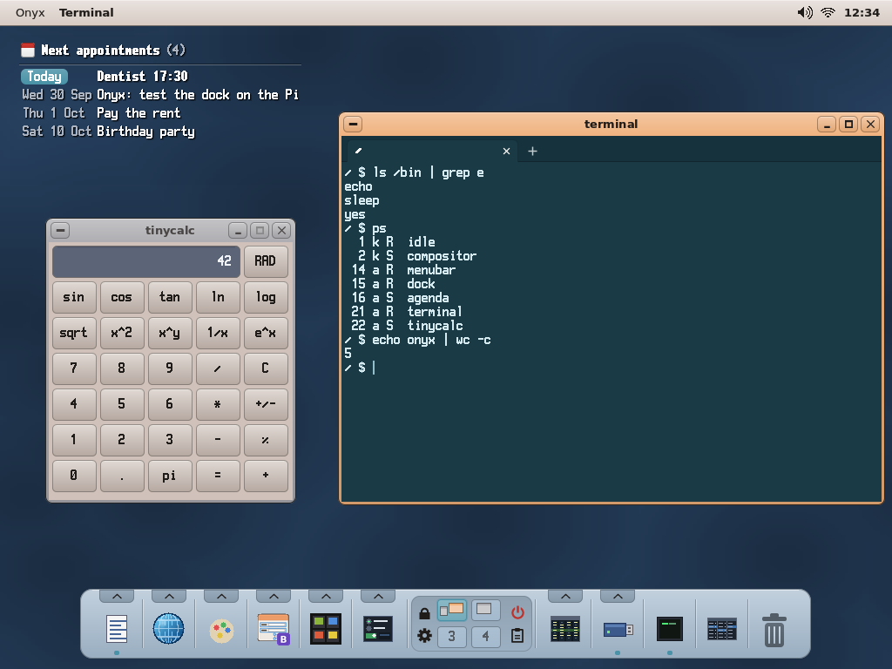
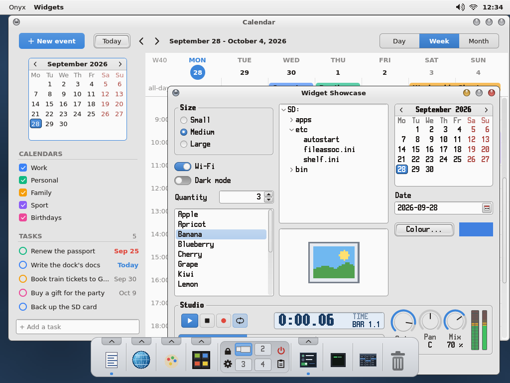
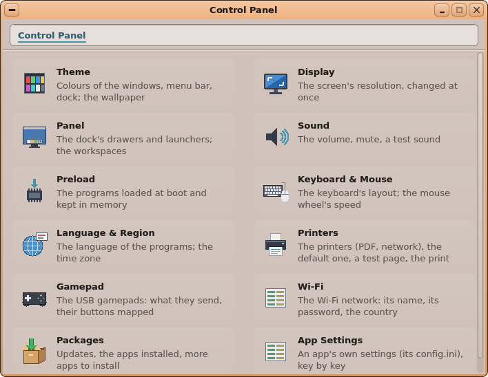
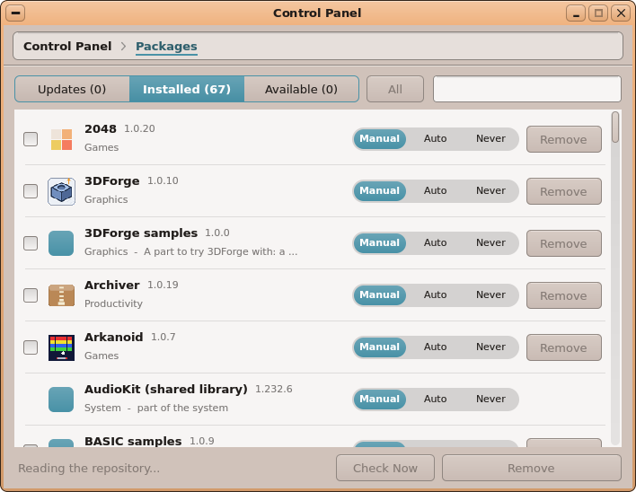

Several desktops in one.
Four workspaces by default, up to six. Mail here, a document there: each thing has its place, and a keyboard shortcut takes you from one to the next.
Classic in spirit, careful in the details: Onyx keeps what has always worked and softens the edges.

The current app’s menus, the time, the sound, the Wi-Fi. Click the time for the month’s calendar, click the Wi-Fi to join a network, no restart needed.

One drawer per family: productivity, internet, graphics, games. A click starts an app or brings it back in front of you. Drop a file on an icon to open it, on the Trash to throw it away.

Your next calendar appointments show right on the wallpaper. Pin a note and it appears beside them. A click opens the day or the note.


Each folder opens in the next column, so you always see where you came from. Previews of pictures and text, a Trash that loses nothing, drag and drop everywhere. Plug in a USB stick and it shows up by itself.

Seven ready-made looks, classic or modern, or colours of your own. Eight wallpaper patterns that take any tint you like, or one of your photos.


Display, sound, keyboard, Wi-Fi, printers, gamepads: the Control Panel gathers it all. Onyx speaks English and French, and knows eight keyboard layouts.
The French translation is arriving app by app; some apps are still in English only.

Every day Onyx looks for what is new and lets you know. Choose for each app: update automatically, on request, or never. The system itself updates at the next restart.

Four workspaces by default, up to six. Mail here, a document there: each thing has its place, and a keyboard shortcut takes you from one to the next.
Onyx finds the AirPrint-compatible printers on your network, with no driver to install. If you don’t have one, everything prints to PDF.